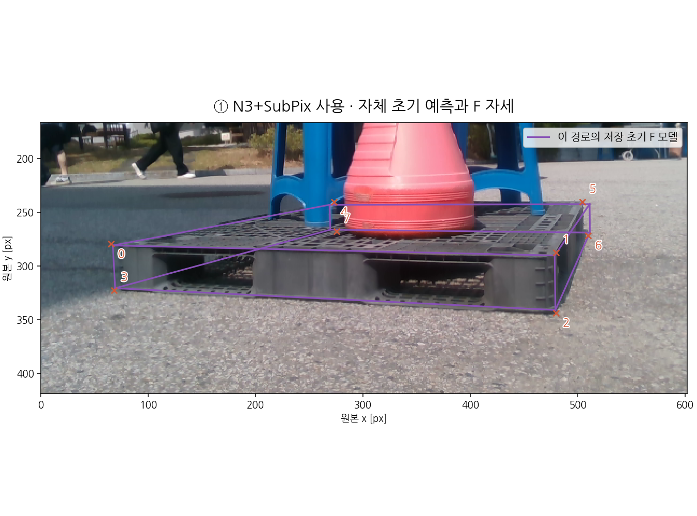
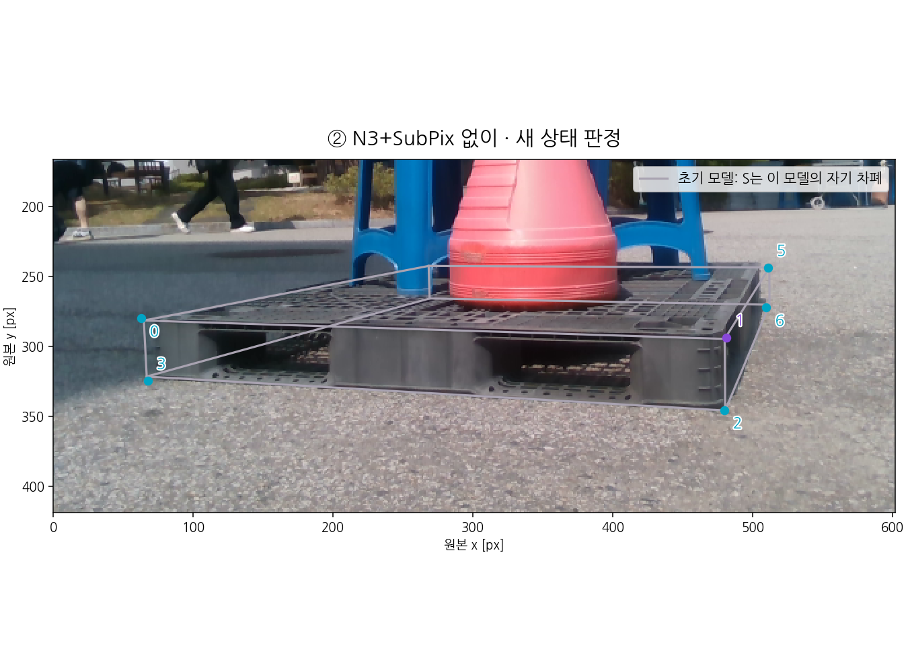
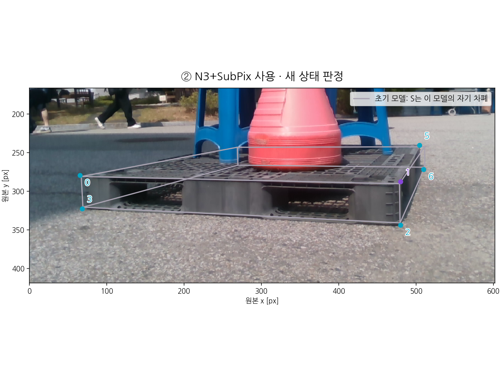
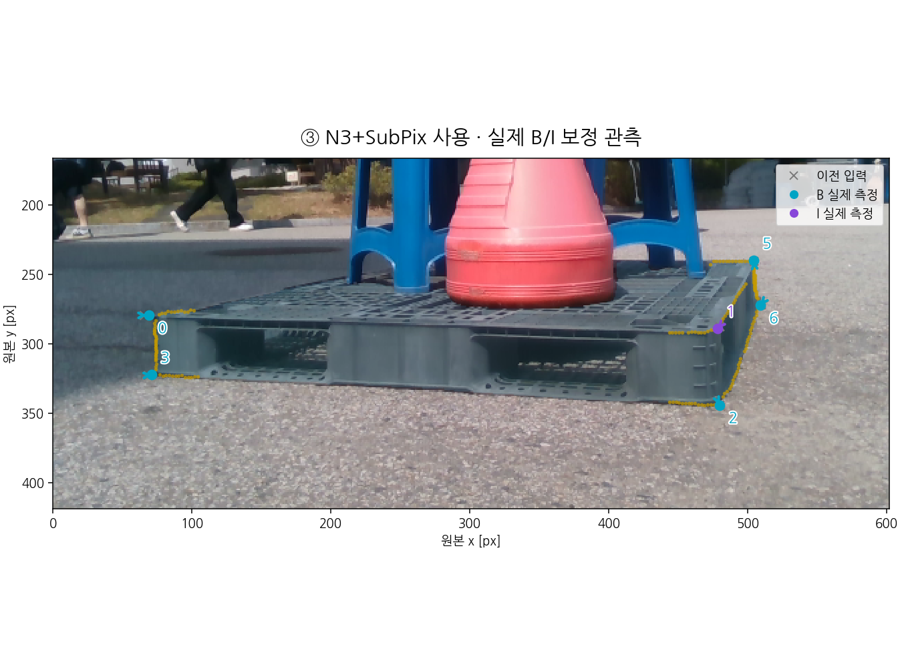
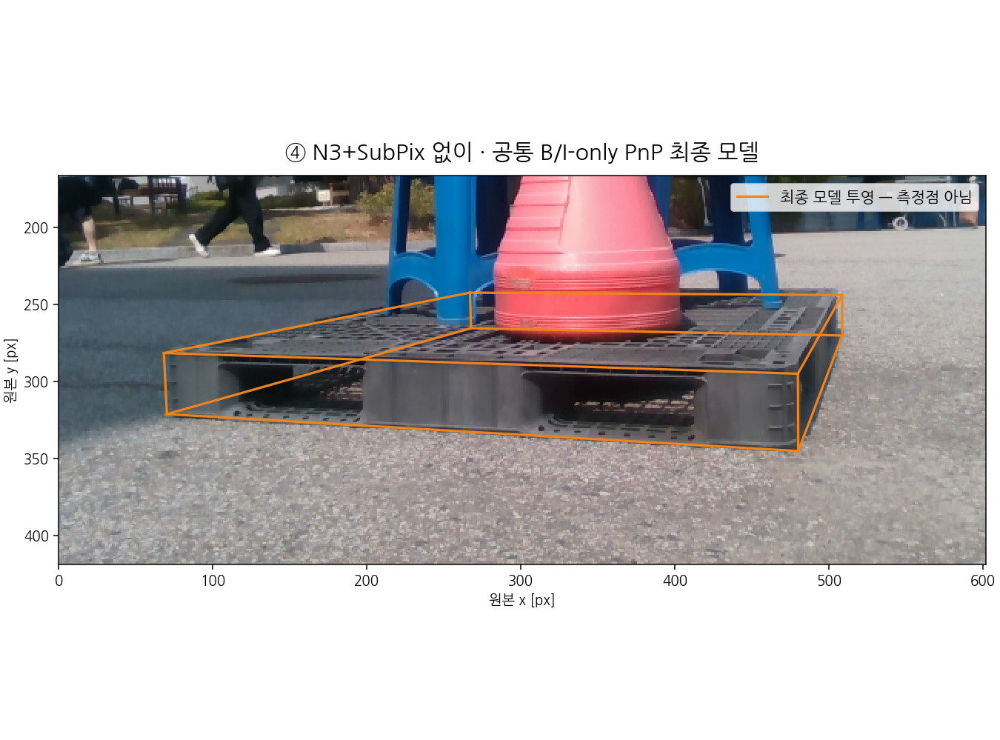

N3+SubPix 없이
그림을 누르면 원본 크기로 확대합니다.
원래 입력 좌표와 각 경로의 초기 F 자세입니다. 점은 역사적 예측이며, 뒤에 S/O/T/U로 판정되는 채널도 이 초기 예측 표시에는 포함될 수 있습니다. 그 점을 새 RGB 관측으로 쓰지는 않습니다.
그림을 누르면 원본 크기로 확대합니다.

그림을 누르면 원본 크기로 확대합니다.
각 경로의 자체 초기 자세·좌표로 새로 판정했습니다. B/I만 점으로 표시합니다. S는 모델 자기 차폐, O는 외부 가림 분류, T는 화면 밖 추정, U는 미확정입니다. 분류 상태는 정답이 아닙니다.

그림을 누르면 원본 크기로 확대합니다.
| 번호 | 상태 | 새 p_visible | 원 YOLO conf |
|---|---|---|---|
| 0 | B | 0.992 | 0.985 |
| 1 | I | 0.994 | 0.999 |
| 2 | B | 0.998 | 0.999 |
| 3 | B | 0.996 | 0.994 |
| 4 | O | 0.081 | 0.999 |
| 5 | B | 0.996 | 0.998 |
| 6 | B | 0.997 | 0.999 |
| 7 | S | — | 1.000 |

그림을 누르면 원본 크기로 확대합니다.
| 번호 | 상태 | 새 p_visible | 원 YOLO conf |
|---|---|---|---|
| 0 | B | 0.992 | 0.985 |
| 1 | I | 0.993 | 0.999 |
| 2 | B | 0.998 | 0.999 |
| 3 | B | 0.996 | 0.994 |
| 4 | O | 0.103 | 0.999 |
| 5 | B | 0.994 | 0.998 |
| 6 | B | 0.997 | 0.999 |
| 7 | S | — | 1.000 |
회색 ×는 그 경로의 이전 좌표, 색 ○는 실제 B/I 보정 결과입니다. 이동이 없으면 원래 좌표를 유지한 것입니다. 노란 작은 점은 보관된 실제 영상 선 지지입니다. 얇은 파란 영역은 그 경로의 저장 target mask이며 가림 정답은 아닙니다.
그림을 누르면 원본 크기로 확대합니다.
| 점 | 이동 px | 실제 이동 | 유지·채택 근거 |
|---|---|---|---|
| B0 | 5.247 | 이동 | 영상의 두 선 교점 채택 |
| I1 | 0.000 | 원좌표 유지 | 두 선의 안정적인 교차 근거 부족 |
| B2 | 0.175 | 이동 | 영상의 두 선 교점 채택 |
| B3 | 3.590 | 이동 | 영상의 두 선 교점 채택 |
| B5 | 3.223 | 이동 | 영상의 두 선 교점 채택 |
| B6 | 0.722 | 이동 | 영상의 두 선 교점 채택 |

그림을 누르면 원본 크기로 확대합니다.
| 점 | 이동 px | 실제 이동 | 유지·채택 근거 |
|---|---|---|---|
| B0 | 3.893 | 이동 | 영상의 두 선 교점 채택 |
| I1 | 2.078 | 이동 | 영상의 두 선 교점 채택 |
| B2 | 0.499 | 이동 | 영상의 두 선 교점 채택 |
| B3 | 3.084 | 이동 | 영상의 두 선 교점 채택 |
| B5 | 0.471 | 이동 | 영상의 두 선 교점 채택 |
| B6 | 0.915 | 이동 | 영상의 두 선 교점 채택 |
동일 B/I-only PnP의 저장 결과입니다. 선은 강체 모델 투영이며 새 측정점이 아닙니다. O/T/U는 정밀 영상점으로 피팅하지 않았고 S도 영상 관측으로 쓰지 않았습니다.

그림을 누르면 원본 크기로 확대합니다.
PnP 제약: 통과
저장 사후 평가: T 3.622 cm · R 0.955°
평가 기준: 통과 (T < 5cm · R < 5°)
그림을 누르면 원본 크기로 확대합니다.
PnP 제약: 통과
저장 사후 평가: T 2.613 cm · R 0.956°
평가 기준: 통과 (T < 5cm · R < 5°)